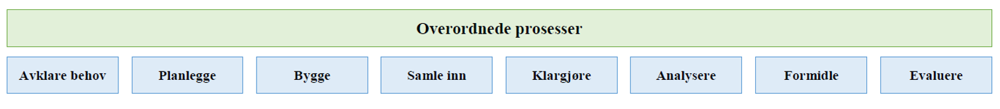

1 Formål
Formålet med dette notatet er å beskrive produksjonsprosessen for data til arbeidsmarkeds- og lønnsstatistikk. Notatet beskriver datakildene som inngår, sentrale definisjoner, hvordan dataene er organisert og koblet sammen, kvalitet samt sentrale variable.
1.1 Bakgrunn
Hovedkilden til data om lønns- og arbeidsmarkedsstatistikk er a-ordningen. Ordningen trådte i kraft 1. januar 2015. A-ordningen er en digital samordning av all rapportering om inntekt, arbeidsforhold og skattetrekk til NAV, Skatteetaten og Statistisk sentralbyrå (SSB). Arbeidsgivere og andre opplysningspliktige skal rapportere opplysninger samlet til etatene i a-meldingen.
A-meldingen erstattet 5 skjemaer: melding om arbeidsforhold til NAV Arbeidstakerregister (Aa-registeret), lønns- og trekkoppgaven (LTO), terminoppgaver for skattetrekk og arbeidsgiveravgift, årsoppgaven for arbeidsgiveravgift og oppgave til lønnsstatistikk.
SSB får opplysninger om lønn og ansatte gjennom a-meldingen istedenfor flere ulike kilder. Dette har størst effekt på lønns- og sysselsettingsstatistikken, men har også betydning for mange andre statistikker som bruker data om lønn, ansatte og jobber eller som skal si noe om konjunkturutvikling der jobber har stor betydning.
Et viktig formål med ordningen var og er å forenkle arbeidsgivers rapportering av ansettelsesforhold og inntektsopplysninger ved at de unngår å sende de samme opplysningene til SSB, NAV og Skatteetaten. I tillegg skal de gi bedre oppgaveløsning i etatene og bedre tjenester til brukerne.
For lønns- og sysselsettingsstatistikken i SSB er det utviklet et felles produksjonssystem for mottak og behandling av data fra a-meldingen. Data SSB tidligere mottok gjennom utvalgsundersøkelsen for lønnsstatistikk for privat sektor, lønn for offentlig sektor, LTO- og Aa-registeret ble avsluttet og dekkes nå av a-meldingen.
I dette produksjonssystemet går data gjennom ulike datatilstander – fra kildedata, som er data vi mottar fra Skatteetaten – til klargjorte data og til slutt statistikkdata, som danner utgangspunkt for statistikkproduksjon.
Produksjonsprosessen som beskrives her er for den klargjorte filen som benyttes for å lage arbeidsmarkeds- og lønnsstatistikk, til utlevering som mikrodata til andre seksjoner i SSB, til forskere og brukere av microdata-plattformen.
Den klargjorte filen for arbeidsmarkeds- og lønnsstatistikk benyttes i følgende statistikkprodukter ved seksjon for arbeidsmarkeds- og lønnsstatistikk i SSB per april 2023:
Sysselsetting blant innvandrere, årlig (inkluderer også tall for ikke-bosatte)
Tilknytning til arbeid, utdanning og velferdsordninger, årlig (foreløpige og endelige tall)
Antall arbeidsforhold og lønn, kvartal og månedlig (foreløpig og endelige tall)
Arbeidskraftundersøkelsen, AKU (til bl.a. estimering og støtteinformasjon ved intervju)
I tillegg benyttes filen i en rekke andre statistikker og registre i SSB, blant annet:
Helsestatistikker
Strukturstatistikkene
Statistikk om uføretrygd og alderspensjonister
Antall ansatte i SSBs Virksomhets- og foretaksregister (VoF)
Oversikten er ikke uttømmende.
Dataene benyttes også i en rekke ulike analyser og rapporter. Forskere kan søke om tilgang til disse dataene, se mer informasjon i vedlegg C.
1.2 Annen relevant dokumentasjon
Beskrivelse av produksjonsopplegget for den registerbaserte sysselsettingsstatistikken før 2015 er beskrevet i dokumentasjonsnotatet 2010/08.
Dokumentasjon av SFP, som danner utgangspunkt for statistikken Tilknytning til arbeid, utdanning og velferdsordninger i notatet system for persondata, dokumentasjons fra og med årgang 2008.
Det er også skrevet flere dokumentasjonsnotater om lønn. Kvalitetsrapporter i henhold til krav om kvalitetsrapporter til Eurostat under Rådsforordning (EU) nr. 0530/1999, Grini, Knut Håkon (2007) og Lien et al (2009). I tillegg er det dokumentasjon av utvalgsmetode og vekting av lønnsstatistikken i Grini (2003). Øvrig aktuell dokumentasjon av produksjonen og kvalitetssikringen av lønnsstatistikk før 2016 finnes i Kristoffersen et al (2006) og Kristoffersen, Sigrun (2011).
Dokumentasjon av beregningsopplegget for årslønn før 2015 er beskrevet i dokumentasjonsnotatet 2011/12.
1.3 Begreper
A-meldingen
Dette er navnet på meldingen som inneholder alle opplysningene som sendes inn til Skatteetaten.
A-ordningen
A-ordningen er en samordnet måte for arbeidsgivere å rapportere opplysninger om inntekt og ansatte til NAV, SSB og Skatteetaten. A-ordningen trådte i kraft 1. januar 2015.
A-ordningen er navnet på ordningen som EDAG-prosjektet utviklet.
A-opplysningsloven
Lov om arbeidsgivers innrapportering av ansettelses- og inntektsforhold m.m. (a-opplysningsloven)(lovdata.no) gir hjemmel for a-ordningen.
1.4 Konfidensialitet
Lov om offisiell statistikk og Statistisk sentralbyrå (statistikkloven)(lovdata.no) og SSBs regler for konfidensialitet følges.
I starten av produksjonssystemet, i prosessen mellom kildedata og inndata (kapittel 5), blir fødselsnummer (og d-nummer) erstattet av statistikknummer (SNR). SNR er et løpenummer som unikt identifiserer personer over tid. Ved skifte av fødselsnummer en eller flere ganger vil SNR være bindeleddet mellom de ulike fødselsnumrene og sikre at vi har en unik nøkkel over tid.
1.5 Notatets struktur og leseveiledning
Strukturen i dette notatet følger SSBs virksomhetsmodell, som består av følgende steg:

I dette notatet beskrives alle prosessene med unntak av prosess 6 (analysere) og 7 (formidle). Relevante momenter under disse prosessene er beskrevet i «Om statistikken» til hver enkelt statistikk.
Notatet består av fire deler:
Del 1. Avklare behov og planlegge
Denne delen avklarer behov for data om sysselsetting og lønn. Omfatter definisjoner beskrevet i kapittel 2 og beskrivelse av datakildene i kapittel 3. I kapittel 3 er det gitt en grundig beskrivelse av a-ordningen, som er hoveddatakilden, samt en omtale av kvalitet og sentrale endringer ved innføringen av a-ordningen.
Del 2 beskriver de ulike datakildene (kapittel 4), prosessene fra kildedata til inndata i kapittel 5 og datatilstanden inndata (kapittel 6). Sammenkoblingen av de ulike datakildene i datavarehus omtaltes i kapittel 7, mens kapittel 8 gir en overordnet beskrivelse av kontroller og tiltak.
Del 3. Klargjøre data – fil for arbeidsmarkeds- og lønnsstatistikk
Klargjøring av data omfatter bearbeiding, editering, beregningsmetoder, mv. Denne delen beskriver alle klargjøringsprosesser frem til det vi omtaler som klargjort fil for arbeidsmarkeds- og lønnsstatistikk.
Kort oversikt over de ulike kapitlene i del 3:
Kapittel 9. Knytning mellom lønns- og arbeidsforhold
I inndata ligger informasjon om arbeidsforhold og lønn i ulike tabeller. Dette kapittelet beskriver hvordan arbeidsforhold (jobb) og lønn knyttes sammen.
Kapittel 10. Påkobling av arbeidsforhold fra andre kilder
I kapittel 10 beskrives påkobling av arbeidsforhold fra andre kilder: a) Vernepliktige og b) Skatteetatens oppdrags- og arbeidsforholdsregister (OAR) som omfatter utenlandske oppdragstakere.
Kapittel 11. Tiltak på sluttdato arbeidsforhold
Det gjøres noen korreksjoner på sluttdato for arbeidsforhold (jobber) basert på informasjon i NAVs Arena- register og SSBs statistiske kopi av folkeregisteret (FREG).
Datagrunnlaget avgrenses til å gjelde en referanseuke, vanligvis 3. uke i måneden. I dette kapittelet gis det også en begrunnelse for hvorfor vi har valgt en referanseuke.
Kapittel 13. Avgrensning og aggregering av arbeidsforhold
Det gjøres noen spesielle avgrensninger ved overlappende arbeidsforhold i samme virksomhet og aggregeringer hvis flere arbeidsforhold i samme virksomhet, se beskrivelse i kapittel 13.
Kapittel 14. Permisjoner og permitteringer
Opplysninger om permisjoner og permitteringer benyttes til klassifisering av sysselsetting (beskrives i kapittel 19). Personer som er permittert eller på permisjon med forventet varighet under 90 dager skal ifølge anbefalingene fra ILO klassifiseres som sysselsatte. Behandling av opplysninger om permisjon og permitteringer i a-meldingen er beskrevet i kapittel 14.
Kapittel 15. Imputering av arbeidsforhold fra perioden før
Imputering av arbeidsforhold fra perioden før (t-1) er beskrevet i kapittel 15. Opplysningspliktige rapporterer status hver måned i a-meldingen. For å unngå at uteglemmelser i rapporteringen eller forsinket rapportering skal påvirker sysselsettingstallene, imputeres alle arbeidsforhold fra måneden før (måned t-1) hvis hele foretaket mangler i statistikkmåneden (måned t). Det er flere kriterier som må oppfylles for at arbeidsforhold skal bli imputert, se omtale i kapittel 15.
Kapittel 16. Koble på kjennetegn fra virksomheter og foretak i VoF
I kapittel 16 beskrives påkobling av kjennetegn for virksomheter (bedrifter/underenheter) og foretak fra SSBs Virksomhets- og foretaksregister (VoF).
Kapittel 17. Kontroll og tiltak på fravær mellom virksomheter
Tiltak hvis det er en dags overlapp ved jobbskifter mellom virksomheter innenfor referanseuka omtales i kapittel 17.
Kapittel 18. Påkobling av ytelse fra a-meldingen
Vi bruker informasjon om ytelser fra det offentlige for å vurdere hvilke arbeidsforhold uten lønn som skal klassifiseres som sysselsetting. Vi skiller mellom følgende ytelser som rapporteres i a-meldingen: svangerskapspenger, foreldrepenger, sykepenger og sykepenger til fisker som bare har hyre. Dette er omtalt i kapittel 18.
Kapittel 19. Klassifisering av arbeidsforhold og sysselsatte
Det rapporteres inn mange arbeidsforhold i a-meldingen som etter SSBs vurdering ikke er aktive i statistikkperioden. I kapittel 19 bestemmes det hvilke arbeidsforhold som skal regnes som aktive og dermed avgjøre sysselsetting.
Kapittel 20. Koble på helt arbeidsledige og bosatte utenfor arbeidsstyrken
I Kapittel 20 beskrives påkobling av helt arbeidsledige og personer utenfor arbeidsstyrken (bosatte personer 15 år og eldre).
Kapittel 21. Håndtering av lønn og arbeidstid
Kapittel 21 beskriver hvordan informasjon om lønn bearbeides og hvordan variabler i lønnsstatistikken beregnes og kontrolleres. I tillegg beskrives metoden for forbedring av informasjon om arbeidstid.
Kapittel 22. Utlending, beregning av påkobling av kjennetegn
I dette kapittelet beskrives utledning av ulike variable og kjennetegn:
Arbeidsmarkedsstatus (gir bl.a. informasjon om man er lønnstaker, helt ledig eller ikke-lønnstaker)
Utledning av arbeidssteds- og bostedskommune
Imputering av innvandringskategori og innvandringsgrunn
Imputering av næringskode og sektor
Kapittel 23. Klargjort fil for arbeidsmarkeds- og lønnsstatistikk
Prosessene beskrevet i del 2 (samle inn) og del 3 (klargjøring) leder frem til klargjort fil for arbeidsmarkeds- og lønnsstatistikk.
Del 4. Klargjøre data – fil for registerbaserte sysselsettingsstatistikker
Del 4 beskriver klargjøringsprosessene frem til den klargjorte filen for registerbasert sysselsettingsstatistikk. Den største forskjellen mellom den klargjorte filen for arbeidsmarked og lønn og klargjort fil for registerbasert sysselsettingsstatistikk er at sistnevnte også omfatter selvstendig næringsdrivende samt har kun november som referansetidspunkt.
Kapittel 24 beskriver påkobling av selvstendig næringsdrivende. I kapittel 25 beskrives kort noen sentrale statistikker, mens kapittel 26 beskriver statistikken Antall arbeidsforhold og lønn.